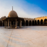
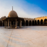

One of the most important features of Islamic Cairo, and one of the oldest war fortresses built in the Middle Ages. When in Cairo, it is basically impossible to miss the Salah El-Din Citadel , one of the world's greatest monuments to medieval warfare. Resembling a typical early medieval fortress, with large imposing gateways, towers and high defending walls, the Citadel is one of Cairo's main attractions and probably the most popular non-pharaonic monument in the Egyptian capital. The prominent fortress houses three mosques - of which the impressive Mohamed Ali Mosque - a carriage museum, a military museum, and a garden museum, just to name a few, and they are all worth a visit. You are even allowed the run of the fortifications and it is worth a try: the views are spectacular from this height. The citadel is also home to the impressive Gawhara Palace (the Jewel Palace), named after Gawhara Hanem, Mohamed Ali's last wife. Built in 1814, it housed the ruler's administration and was used as a personal residence by the Egyptian leader. Beautiful gold inscriptions adorn the walls of this majestic Ottoman-influenced palace. One of its most eccentric components is the Watch Hall, where the shape of a watch has been used to decorate the walls.

ENTRY PRICE: 60 EGP for Egyptians
30 Egyptian Students
200 For Foreigners
100 For Foreign Student.


The collection here is a reflection of Cairo’s past wealth—displaying a varied collection of artifacts from across the Muslim world that ended up in Cairo due to its influence in various ages of Islamic history. Although it has never been on the traditional Cairo tourist path, in part due to the fact that it only recently opening after a ten year renovation.
The museum displays a wealth of artifacts that display the full range Islamic arts—from architectural forms and ornamentation from the monuments and mosques of Cairo to decorated manuscripts from Persia and beautifully crafted home wares and carpets from Turkey and the Maghrab.
The Museum of Islamic Art in Cairo is the world's largest Islamic museum with diverse collections of Islamic arts from India, China, Iran through the arts of Arabian Island, the Levant, Egypt, North Africa and Andalusia.
The Museum of Islamic Antiquities appeared for the first time in the world and was a single room that allowed the public to visit to study its monuments. In 1844, the Ruler's Mosque in God's Order became the headquarters of the House of Arab Antiquities and oversees its conservation committee.
The number of antiques collected was 111, after which a small building was built in the saucer of the ruler's mosque called the "Arab Museum" under the administration of Frantzbasha, who left service in 1892.
ENTRY PRICE: visits from 9 am to 5 pm.
EGP 20 for Egyptians
10 for Egyptian students
120 for foreigners
60 for foreign students
At Night.
for Egyptians
10 for Egyptian students
140 for foreigners
70 for foreign students.


The Church of Saint Samaan Al-Kharaz or the Monastery of Semaan Kharaz in Mokattam is an Egyptian Coptic church excavated inside the Mokattam Mountains in Cairo. The Cathedral of the Virgin and St. Simeon, the largest church in Egypt, with a capacity of 20,000 people, and contains 76 engraved imgtourism.
ENTRY PRICE: Entry is free, but the catch is that only one road travels to the church.


See the distinctive blend of cultures at the Coptic Museum in Cairo where are displayed hundreds of Christian Egyptian documents, statues and artefacts in which you'll distinct Ancient Egyptian, Greek, Roman, Byzantine and Ottoman influence. Take a breath of fresh air in a peaceful courtyard surrounded by green gardens when you need to relax.
the Coptic Museum offers a unique collection of art and artifacts from the history of Coptic Egypt and an exhibit about the history of Christianity in Egypt.
The Coptic Orthodox is a separate church from the Orthodox Churches of Greece and Turkey and the Catholic Church in Rome, having split from the main stream of Christianity early in its history of a theological disagreement about the nature of Christ and the Holy Spirit.
Coptic Christianity became was the dominant religion in Egypt under Roman rule before the arrival of Islam in the 7th century. The unique history of Christianity in Egypt is fascinating and fiercely defended by the Coptic Church to this day.
The museum houses the largest collection of Coptic artwork and cultural artifacts in the world, cataloguing a period of great change in the history of Egypt and the world at large. The history of Coptic Christianity records the interaction of several different cultures and religions, including the ancient gods of Egypt, the pagan faiths of Rome and Greece, early Christianity, and Islam.
You can see here that it is no coincidence that the ancient Egyptian ankh and the cross of Christianity are so similar in their fundamental form.
ENTRY PRICE: 20 EGP for Egyptians
10 for Egyptian students
100 for foreigners
50 for foreign students.


It is a 1 km long pedestrian street, and to quote the UN, it has "the greatest concentration of medieval architectural treasures in the Islamic world".
It might not be the Pyramids, but it is a definite must-see to get a true feel for the history of Cairo as a city, and to see some frankly mind-blowing medieval Islamic architecture and art. And not in a stuffy, museum-type behind-the-glass environment -- it is a free pedestrian street with the architecture all around you, so you do not have to worry about paying money to stare at super curated things that you do not really understand, and are kind of boring. One thing we can promise about Moez Street -- it is not boring, that is for sure.
ENTRY PRICE: Combination ticket price: 100 EGP (non-Egyptian), 50 EGP (Egyptian). This ticket gives you access to Qalawun Complex, Sulayman Agha Al-Silahdar Mosque and Sabil, Al-Kamil School, Al-Nasir Muhammad Ibn Qalawun Mosque and School, Sultan Barqouk Mosque, Musa Bin Maimun Temple, Hammam Inal and Amir Beshtak Palace.


Take the steps that lead to one of the most beautiful churches in the Middle East known as the Hanging Church.
The Hanging Church is also referred to as the Suspended Church or Al-Moallaqa in Arabic. It is called the Hanging Church because it was built on the southern gate of the Roman Fortress. Logs of palm trees and layers of stones were constructed above the ruins of the Roman fortress to be used as a fundament. The Hanging Church is a unique church and has a wooden roof in the shape of Noah’s ark. From the 7th century to the 13th century, the Hanging Church served as the residence of the Coptic Patriarch. Al-Moallaqa has witnessed important elections and religious ceremonies.
ENTRY PRICE: without fees for Egyptians
100 pounds for foreigners.
50 pounds for a foreign student.


 

The mosque of Amr ibn al-'As is the oldest surviving mosque in Egypt and Africa. General Amr ibn al-'As was one of the first companions of the Prophet Muhammad. After conquering Egypt in 20 AH/640 AD, he founded its first Islamic capital, Fustat, which falls within the modern city of Cairo. A year later, by order of the Caliph Umar ibn al-Khattab, he also founded the eponymous mosque of Amr ibn al-'As, which thus became the new capital's very first building. During the early years following the conquest, the mosque served as a place of gathering for Muslim community and Amr's troops, which at the time remained a minority in Egypt. Several of the Prophet's companions assisted in the building's construction, including al-Zubayr ibn al-Awam and Ubada ibn al-Samit. The structure underwent many architectural changes throughout its lifetime, such that very little of the original survives today. What currently stands in Old Cairo is the mosque's twentieth century reconstruction. However, it remains true to the modesty of Islamic architecture in its earliest form, evolving from a shed with palm-tree columns to the elegant arcade halls that still house prayers to this day.
ENTRY PRICE: free for Egyptian and children under 3 yearsold
50 EGP for foreigners.


ENTRY PRICE: Depends on your trip.


ENTRY PRICE: Depends on your trip.